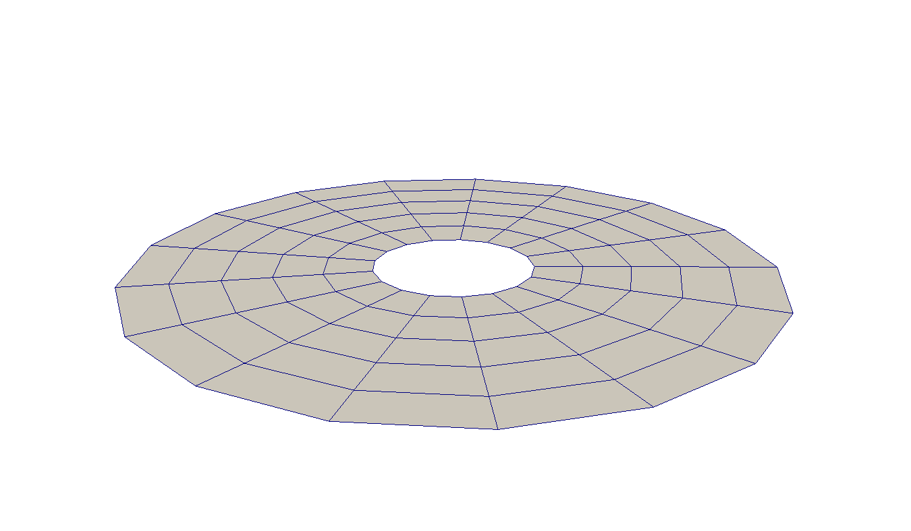
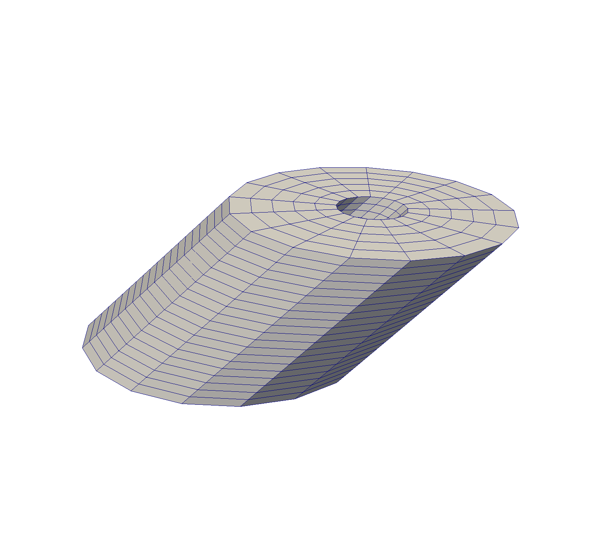

- extrusion_vectorThe direction and length of the extrusion
C++ Type:libMesh::VectorValue<Real>
Unit:(no unit assumed)
Controllable:No
Description:The direction and length of the extrusion
- inputthe mesh we want to extrude
C++ Type:MeshGeneratorName
Controllable:No
Description:the mesh we want to extrude
MeshExtruderGenerator
Takes a 1D or 2D mesh and extrudes the entire structure along the specified axis increasing the dimensionality of the mesh.
Overview
The mesh extruder generator is a tool for increasing the dimensionality of a lower dimension mesh (1D or 2D). Each element is converted to one or more copies of its corresponding higher dimensional element along the specified axis. The Mesh Extruder can also add in the extra sidesets resulting from increasing the dimensionality of the original mesh. Existing sidesets are extruded.
Through the existing_subdomains, layers, and new_ids options, it is possible to specify that an extruded block exists in some layers, but not others. This allows for serrated patterns and gaps. Note that no error will be thrown if the resulting blocks overlap. These three options must have the same number of values given to them. The extrusion vector may use decimal values.
Visual Example
Input 2D Mesh

2D mesh consisting of a ring of QUAD4 elements.
Output of MeshExtruderGenerator

Resulting mesh after extrusion along the vector (1, 1, 0).
Input Parameters
- bottom_sidesetThe boundary that will be applied to the bottom of the extruded mesh
C++ Type:std::vector<BoundaryName>
Controllable:No
Description:The boundary that will be applied to the bottom of the extruded mesh
- existing_subdomainsThe subdomains that will be remapped for specific layers
C++ Type:std::vector<unsigned short>
Controllable:No
Description:The subdomains that will be remapped for specific layers
- layersThe layers where the "existing_subdomain" will be remapped to new ids
C++ Type:std::vector<unsigned int>
Controllable:No
Description:The layers where the "existing_subdomain" will be remapped to new ids
- new_idsThe list of new ids, This list should be either length "existing_subdomains" or "existing_subdomains" * layers
C++ Type:std::vector<unsigned int>
Controllable:No
Description:The list of new ids, This list should be either length "existing_subdomains" or "existing_subdomains" * layers
- num_layers1The number of layers in the extruded mesh
Default:1
C++ Type:unsigned int
Controllable:No
Description:The number of layers in the extruded mesh
- top_sidesetThe boundary that will be to the top of the extruded mesh
C++ Type:std::vector<BoundaryName>
Controllable:No
Description:The boundary that will be to the top of the extruded mesh
Optional Parameters
- enableTrueSet the enabled status of the MooseObject.
Default:True
C++ Type:bool
Controllable:No
Description:Set the enabled status of the MooseObject.
- save_with_nameKeep the mesh from this mesh generator in memory with the name specified
C++ Type:std::string
Controllable:No
Description:Keep the mesh from this mesh generator in memory with the name specified
Advanced Parameters
- nemesisFalseWhether or not to output the mesh file in the nemesisformat (only if output = true)
Default:False
C++ Type:bool
Controllable:No
Description:Whether or not to output the mesh file in the nemesisformat (only if output = true)
- outputFalseWhether or not to output the mesh file after generating the mesh
Default:False
C++ Type:bool
Controllable:No
Description:Whether or not to output the mesh file after generating the mesh
- show_infoFalseWhether or not to show mesh info after generating the mesh (bounding box, element types, sidesets, nodesets, subdomains, etc)
Default:False
C++ Type:bool
Controllable:No
Description:Whether or not to show mesh info after generating the mesh (bounding box, element types, sidesets, nodesets, subdomains, etc)